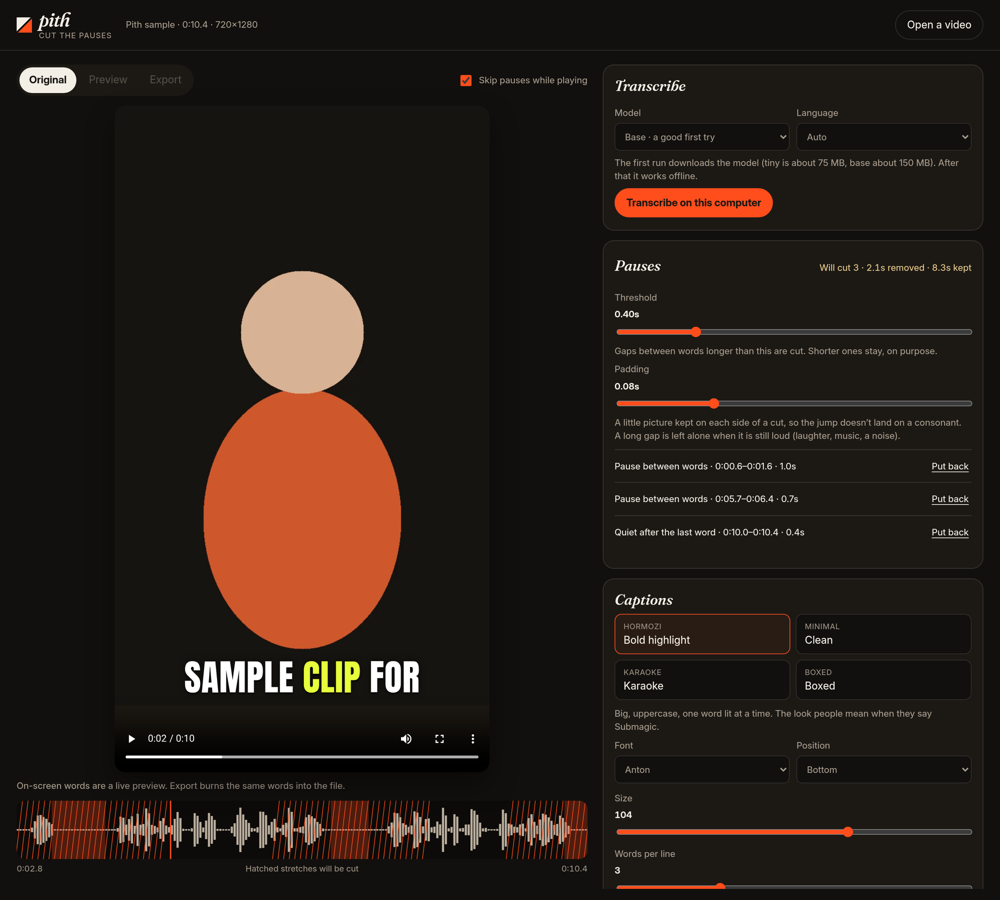
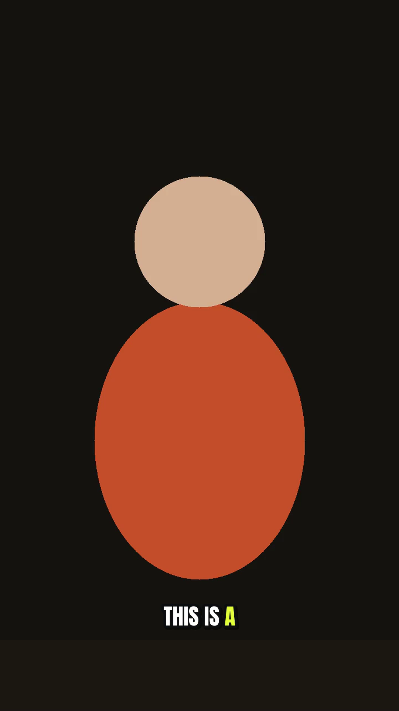
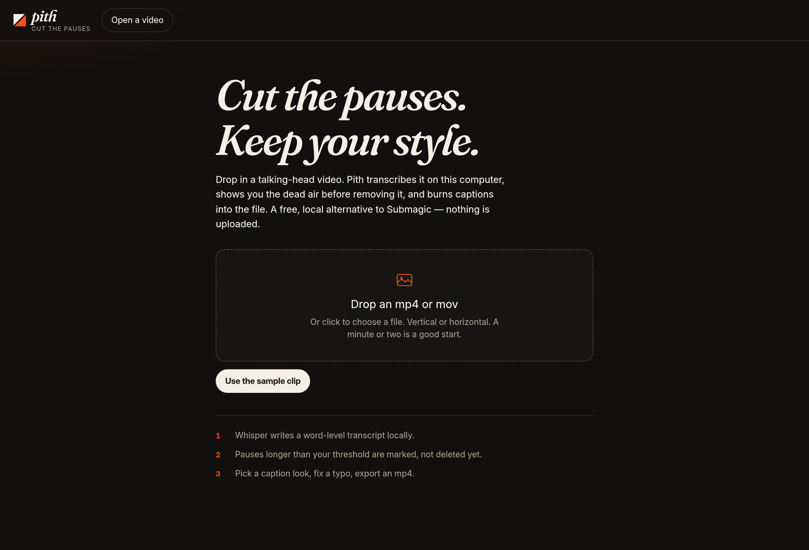
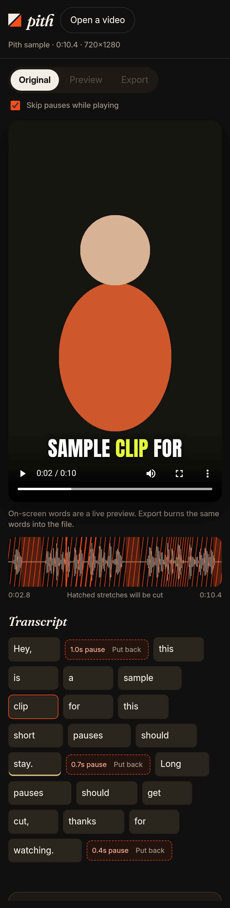

Free Local Open source MIT
Cut the pauses.
Keep your style.
A free, local alternative to Submagic. Pith transcribes your short video on this computer, cuts the dead air, and burns in captions — no account, no watermark, no subscription.
Using an Intel Mac? Download the Intel build.
Also on Mac: Apple silicon or Intel.
All releases View the code on GitHub
The apps aren’t signed yet. On a Mac, right-click Pith and choose Open. On Windows, click More info, then Run anyway.


- On-device captions
- Cuts the dead air
- Bold highlight, Minimal, Karaoke, Boxed
- Match a reference reel
- Edit the transcript
- Export 9:16
The window
From a dropped file to a captioned reel.
Whisper writes a word-level transcript on your machine. Pauses are marked, not deleted, until you export. Pick a look, fix a typo, match a reel you like, and burn the words into a 9:16 mp4.


- Bold highlight
- Minimal
- Karaoke
- Boxed
Side by side
Pith vs Submagic
Submagic is a polished cloud editor. Pith is for when you want the core job — captions and dead-air cutting — for free, on your own machine.
Submagic also includes cloud features Pith does not, such as b-roll, social publishing, and Magic Clips. Submagic prices and plan details are from submagic.co/pricing and Submagic’s help center, checked November 24, 2026.
About
Made by a freshman who wanted the tool to stay on his computer.
Pith is built by Shaurya Singh, a high-school freshman. He also made OpenMath, a free math app, and runs Token by Token, a YouTube channel of short AI explainers.